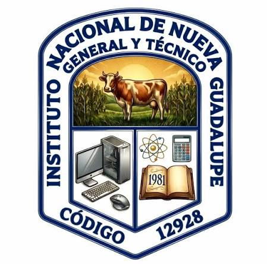

El Bachillerato Técnico Vocacional en Desarrollo de Software y Servicios Informáticos es una opción de educación media orientada a preparar a los estudiantes de manera especializada para incorporarse al sector tecnológico y productivo. A diferencia de los bachilleratos generales, esta modalidad tiene una duración de tres años y se basa en un enfoque por competencias, combinando la teoría con una fuerte carga de prácticas técnicas, creación de proyectos y resolución de problemas reales.
| Característica | General | Desarrollo de Software |
|---|---|---|
| Duración | 2 años | 3 años |
| Formación | Académica amplia | Especializada en software |
| Enfoque | Continuar a la universidad | Sector productivo o universidad |
| Prácticas | Limitadas | Fuerte carga técnica |